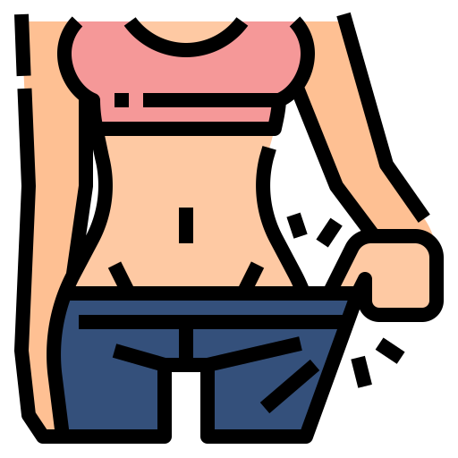

Bone marrow transplantation or hematopoietic stem cell transplantation is one of the most important types of treatment for our wards. The scope of this method is constantly expanding, and the technology of transplantation is constantly being improved. Bone marrow is the spongy, fatty tissue inside our bones. It creates the following parts of the blood:
Red blood cells, carrying oxygen and nutrients throughout the body
About us
Recovery Clinic is one of the largest and well-equipped clinics in London. It is included in the rating
of the best hospitals in the UK in 2019 according to the authoritative magazine Modern Oncology.
Over 20 bone marrow transplants are performed here monthly, which exceeds the plan from
the Ministry of Health by three times.
The clinic works closely with research institutes, patients have the opportunity
to participate in medical research and receive treatment according to the latest protocols.
Thanks to this, even the most severe forms of blood diseases are successfully
treated in the oncohematology department.
We have:
The best equipment.
68 medical departments.
Hundreds of experienced doctors.
Modern laboratories.
60+
Years of experience
20+
Transplantations per month
19,000+
Patients saved
94%
Of patients recommend us
It's Not Just Our Team. It's Your Team
You won't feel loneliness on your way to recovery. No matter the stage, you always have a dedicated and confident transplant team around you, providing knowledge, support, and compassion every day.
Physicians
Board-certified, highly-skilled and confident, the doctors and surgeons are with you, from the first consultation to the end of treatment.
Nurses
All of your nurses are registered and certified in transplantation to provide all the necessary procedures to help you recover.
Social Workers
A single-hearted social worker is always here to connect you and your beloved with helpful resources and support network.
Dietitians
 Your personal nutritionist works with you to choose a diet during treatment and during the recovery period after a complex operation.
Fin. Coordinators
The coordinator takes up all financial issues, from the coverage questions, to understanding the total costs of the recovery plan.
Care Coordinators
From getting you started to helping you through the recovery, your care coordinators are always at your disposal.
Conditions We Treat
The bone marrow transplantation is effective in these cases:
Ewing’s Sarcoma
Ewing's sarcoma is a malignant
tumor that usually affects the bones. Among malignant bone tumors in children, it takes
the second place after osteosarcoma in the frequency of occurrence.
Most often, it occurs
in long tubular bones (such as the femur, tibia, fibula, humerus), as well as in the pelvic
bones, ribs, vertebrae, shoulder blades, etc. Damage to flat bones, such as the pelvic bones,
ribs, or shoulder blades, is much more common with Ewing's sarcoma than with osteosarcoma.
From the primary bone lesion, the tumor quickly spreads to the surrounding soft tissues,
including muscles and tendons.
Immunodeficiencies
Immunodeficiency is associated with the loss of one or
several components of the immune system or non-specific factors that are in close interaction with it.
Primary
immunodeficiency is a congenital disorder caused by genetic disorders or a negative effect on the fetus during its
intrauterine development.
Secondary immunodeficiencies occur in representatives of various age groups against the
background of diseases or the negative effects of external factors. This type can be found much more often than the first one.
Sickle-Cell Anemia
Sickle cell anemia is a hereditary genetic anomaly
in the structure of hemoglobin (an oxygen-transporting protein contained in red blood cells), characterized by the presence of sickle-shaped red blood cells (in the form of a crescent) and chronic
anemia caused by excessive destruction of pathological red blood cells.
Such patients always have anemia, and sometimes jaundice.
Sickle cells are fragile and easily destroyed.
They are inelastic, so they can hardly pass through the smallest blood vessels
(capillaries), obstructing blood flow and reducing the amount of oxygen delivered.
Leukemia
Leukemia is an oncological
disease in which bone marrow cells mutate, not developing into normal mature white blood cells,
but becoming cancer cells. Leukemia differs from other types of cancer in that it does not form a
tumor in any one place, and cancer cells are present in the blood and bone marrow,
sometimes also in the lymph nodes, spleen and other places in the body.
It is not a hereditary disease, however, it can sometimes be diagnosed
in representatives of several generations of the same family.
In some hereditary or congenital diseases, the mechanism of restoration
of genetic material is impaired, and the risk of acute leukemia is significantly increased.
Get a Free Consultation
Get a Free Consultation
Meet Our Bone Marrow Transplant Team
We care about your health. Our clinic consists of real professionals in their field.
Antony Perkins
Head Physician | 15 years of experience
Jane Ellis
Oncohematologist | 8 years of experience
Tomas Abbar
Surgeon | 12 years of experience
Contacts
Fill out the form to pre-register for a free consultation with our hematologist or ask any question.